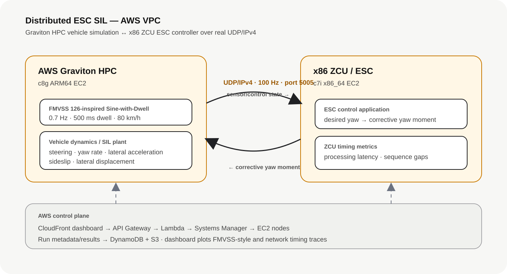

Graviton HPC → ZCU
Steering-wheel angle, vehicle speed, yaw rate, lateral acceleration, sideslip estimate, sequence number, and timestamp are serialized into UDP sensor frames every 10 ms.
Distributed SIL / ESC / vehicle dynamics / cloud compute
Built a two-node automotive SIL environment in AWS where a Graviton EC2 instance acts as the HPC vehicle and maneuver simulator, while a separate x86 EC2 instance acts as the ZCU executing an ESC control algorithm. The two nodes exchange real bidirectional UDP/IPv4 traffic inside an AWS VPC at a 10 ms control period.
View implementation on GitHub ↗The architecture intentionally separates the simulated vehicle environment from the ESC controller. The Graviton node generates the maneuver, integrates the vehicle dynamics model, and publishes sensor state. The x86 node receives that state as a ZCU would, calculates a corrective yaw moment, and returns the command over the VPC network for application in the next vehicle-model step.

Steering-wheel angle, vehicle speed, yaw rate, lateral acceleration, sideslip estimate, sequence number, and timestamp are serialized into UDP sensor frames every 10 ms.
The ZCU calculates the ESC corrective yaw moment from desired yaw, measured yaw, and sideslip, then returns the command with processing-time data.
The Graviton HPC executes an illustrative Sine-with-Dwell stability-control scenario using a simplified nonlinear bicycle model. The implementation uses the characteristic 0.7 Hz steering input, 500 ms dwell, and an 80 km/h entry-speed test condition, then evaluates yaw-rate decay and lateral-displacement metrics. This is a portfolio SIL demonstration, not a certification test or compliance tool.
| Verification metric | SIL criterion | Purpose |
|---|---|---|
| Yaw rate @ 1.0 s | < 35% of reference peak | Checks post-maneuver stability / yaw decay. |
| Yaw rate @ 1.75 s | < 20% of reference peak | Checks continued decay after steering completion. |
| Lateral displacement @ 1.07 s | ≥ 1.83 m in the illustrative case | Checks responsiveness to the commanded maneuver. |
Engineering intent: demonstrate how a regulatory-style vehicle test can be converted into a repeatable SIL verification contract with explicit inputs, interfaces, measurements, and pass/fail criteria.
The test captures networking and controller-timing behavior in addition to vehicle-dynamics outputs. This allows the same run to evaluate both functional ESC behavior and the timing quality of the distributed execution environment.
AWS SAM / CloudFormation provisions the two architectures, IAM roles, security group, API, Lambda, S3, DynamoDB, and CloudFront dashboard.
AWS Systems Manager starts the ZCU application and Graviton maneuver remotely, reducing inbound-management exposure and keeping the worker security group closed to public administration.
UDP/5005 is permitted only between instances using the worker security group, allowing the distributed control traffic without exposing the ESC interface publicly.
The public repository contains the Graviton vehicle/HPC client, x86 ZCU ESC server, infrastructure template, dashboard, Lambda control plane, deployment scripts, architecture documentation, and CI checks including a two-process UDP integration test. Runtime vehicle and network results are generated by the deployed test environment rather than hard-coded into this portfolio page.
Open the project repository ↗ESC · SIL · Graviton · ZCU · UDP/IP · vehicle dynamics · timing · fault management · AWS